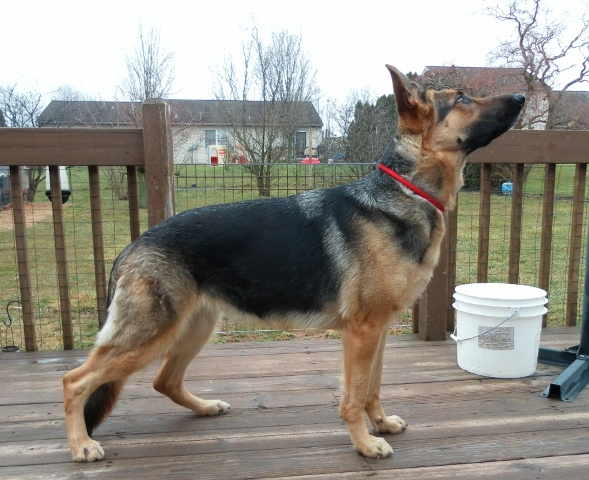
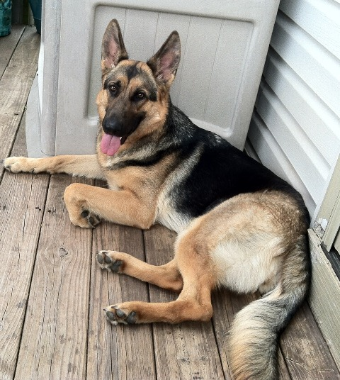
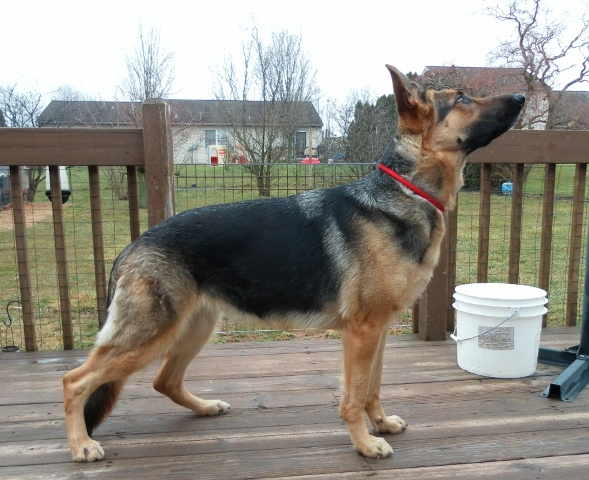
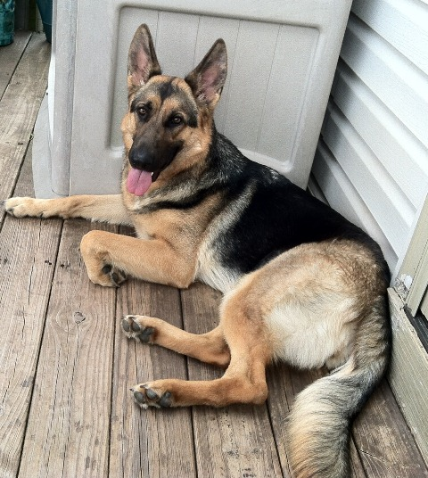

Kaiya
Fein-Schild's Kaiya vom Arcturus
Dam:Layla
Sire:Axle
Kaiya is a Layla and Axle daughter. And just like her mother, Kaiya has quite a nose! She loves to show off her scenting ability with a game of "Find It", which she always wins.
Kaiya is super intelligent, with that ball drive that makes a dog so easy to train. She's pleasent, easy to live with, and just wants to please and protect her family.
Our Girls
 


